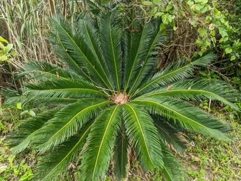

pranet · 出典付きの植物図鑑
ソテツ
Cycas revoluta Thunb. · Cycadaceae

ソテツ は、裸子植物のソテツ目、ソテツ科、ソテツ属に属する常緑樹の1種である。幹の頂端に大きな葉が多数密生する（図1）。外観はヤシや木生シダに似ているが、系統的には全く遠縁であり、この類似性は他人のそら似である。幹は、枯れ落ちた葉の基部が残ってうろこ状に覆われている。雌雄異株であり、雄株は細長い円柱状の小胞子嚢穂（"雄花"）を、雌株は大胞子葉が密生したドーム状の構造（"雌花"）を、それぞれ茎頂に形成する（図1）。大胞子葉について成熟した種子（"実"）は赤朱色になる。根には窒素固定能をもつシアノバクテリア（藍藻）が共生しており、貧栄養地でも生育できる。九州南部から南西諸島、台湾、中国南部に分布する。ソテツを含めてソテツ類は、中生代から形態的にあまり変わっていないため、「生きている化石」ともよばれる。
出典: Wikipedia 日本語版「ソテツ」 · CC BY-SA 4.0
異名: Cycas inermis Oudem., Cycas miquelii Warb., Epicycas miquelii (Warb.) de Laub.
同定や利用は自己責任でお願いします。この図鑑だけを根拠に野生の植物を食べないでください。
出典
- 学名: World Flora Online Plant List 2026-06 · CC0 1.0
- 名前: Wikipedia の記事名と Wikidata · CC0 1.0（Wikidata）。記事名は事実
- 説明: Wikipedia 日本語版「ソテツ」 · CC BY-SA 4.0
- 食用・毒性: World Checklist of Useful Plant Species (Diazgranados et al. 2020, RBG Kew) · CC BY 4.0
- 分布: World Checklist of Vascular Plants (WCVP), RBG Kew, version 2026-06-04 · CC BY 3.0
このページは pranet のデータから自動生成しています。コードは MIT、データは項目ごとのライセンス（説明）。